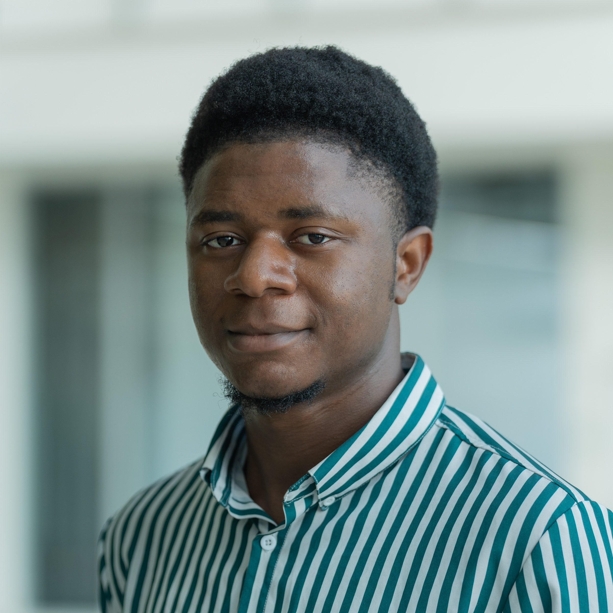

Chaque semaine, j'explore les avancées qui façonnent l'avenir de l'intelligence artificielle.
Qu'il s'agisse de nouveaux modèles d'IA, de publications majeures, d'annonces d'entreprises technologiques,
d'interventions de personnalités influentes ou de tendances émergentes, ce blog propose des analyses claires
et accessibles pour comprendre les transformations en cours.
Au-delà de l'actualité, je partage des astuces, des tutoriels,
des réflexions sur l'avenir des technologies et mes propres expérimentations dans les domaines
de la Data Science, du Machine Learning, du Big Data et du développement web.
L'objectif est simple : apprendre, comprendre et anticiper les innovations qui façonneront le monde de demain.
